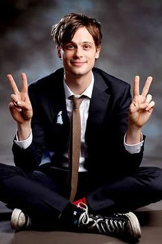
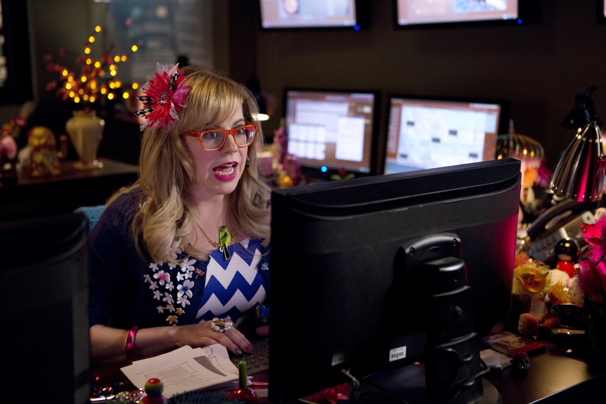
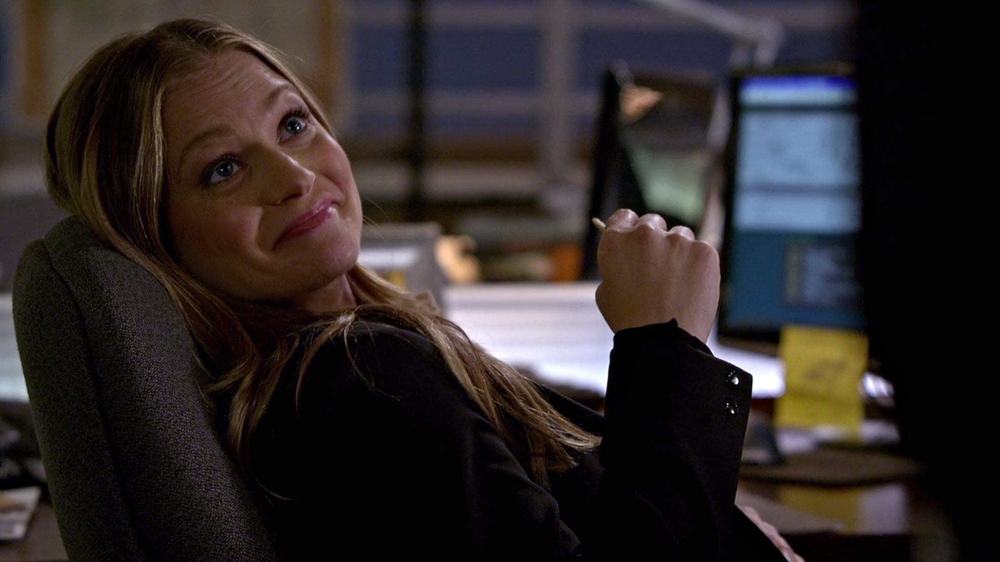
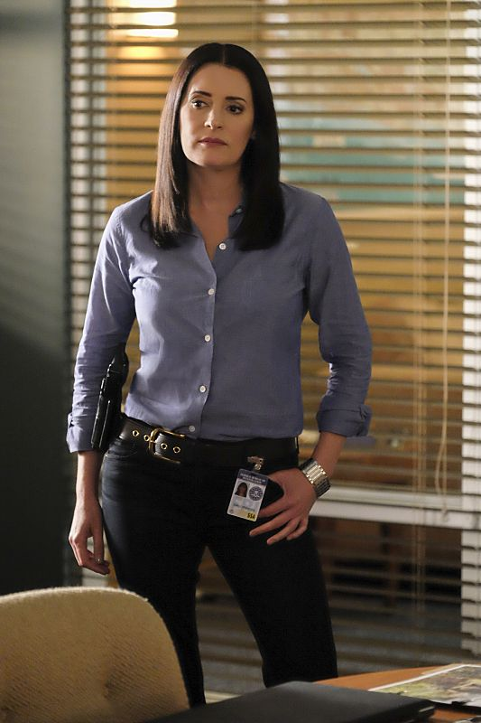
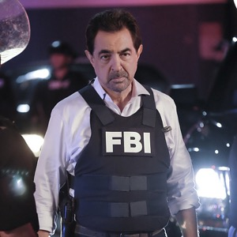
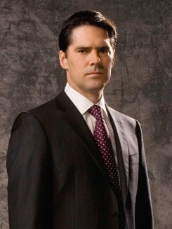
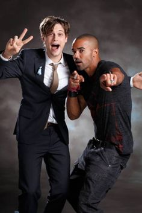
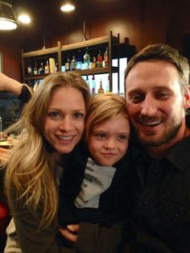
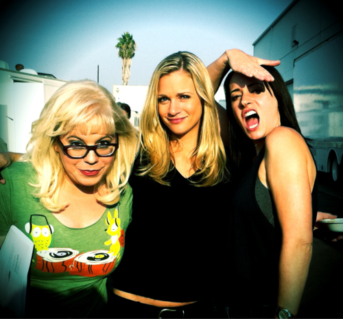

Criminal Minds
Overview
Criminal Minds is a crime tv show featuring an elite group of FBI profilers that catches serial killers and solves murders. Each member on the team has their own skills and talents that help solve the cases. Currently shown on CBS, they just started airing their 14th season.
Cast & Characters
Spencer Reid
Spencer is the smartest of all the members. Additionally he can read super fast.

Penelope Garcia
Penelope is the tech wiz of the team. She does the work from behind the computer and retrieves any valuable info for the team.

JJ
JJ originally helped with the press, but is now also a field agent.

Emily Prentiss
Emily is the current leader of the team after Hotch left the BAU in order to protect his son.

Rossi
Rossi is the eldest of the members and was one of the original founders of the BAU alongisde Gideon.

Aaron Hotchner
Arron was the previous leader of the team. He is now under witness protection with his son away from a serial killer called Mr. Scratch, who is now deceased.

Memorable Moments
The Departure of Derek Morgan


